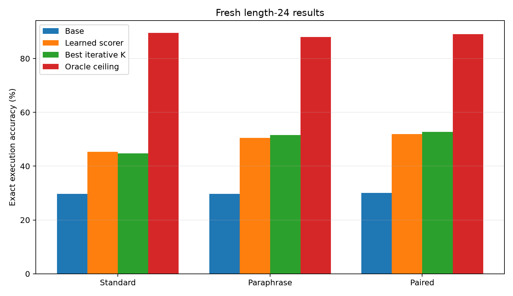
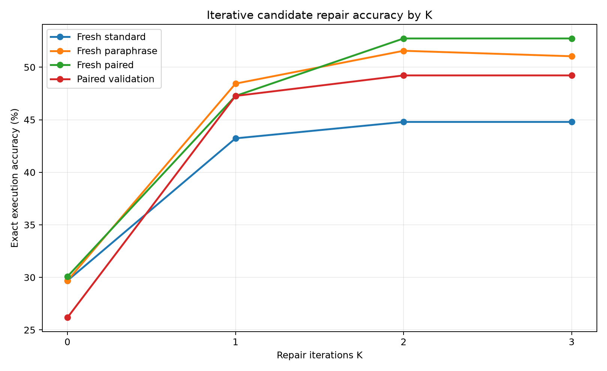
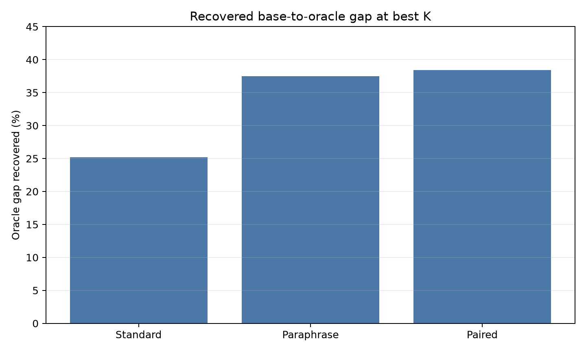
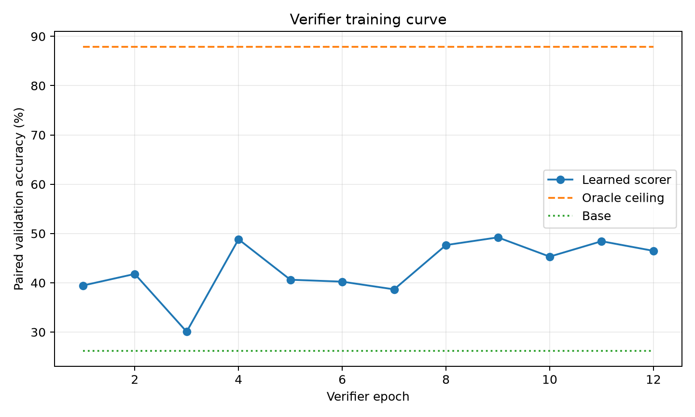
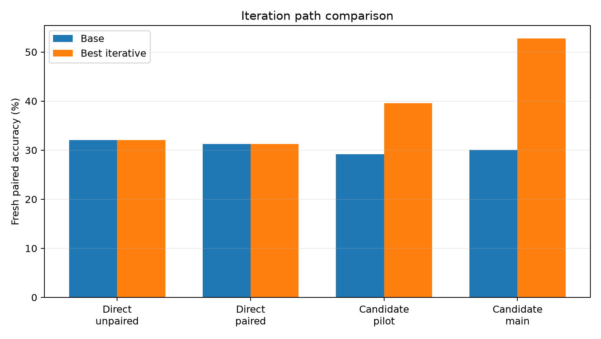

This experiment tests whether a frozen Qwen-attached hidden-program compiler
can be improved at inference time by a learned iterative repair loop. The
compiler emits an executable modular-arithmetic program. A small verifier scores
local candidate repairs from execution-trace features. At inference, the repair
loop starts from the base compiled program and may move one slot edit at a time
for K iterations.
The primary run trained on 384 length-24 programs and selected checkpoints on
a paired standard/paraphrase validation split. On fresh paired length-24
prompts, base accuracy was 30.1%,
unconstrained learned scorer accuracy was 52.0%,
and iterative repair reached 52.7% at
K=2. The local oracle ceiling was 89.1%.
main_iterative_candidate_scorer_s384; verifier epochs: 12; selected epoch: 9.| Split | Base | Learned | Best K | Iterative | Oracle | Delta | Gap |
|---|---|---|---|---|---|---|---|
| Fresh standard L24 | 29.7% | 45.3% | 2 | 44.8% | 89.6% | +15.1 pp | 25.2% |
| Fresh paraphrase L24 | 29.7% | 50.5% | 2 | 51.6% | 88.0% | +21.9 pp | 37.5% |
| Fresh paired L24 | 30.1% | 52.0% | 2 | 52.7% | 89.1% | +22.7 pp | 38.4% |

Most of the gain appears by K=1, with a smaller second-step gain
on validation, paraphrase, and paired splits. K=3 adds no measurable
benefit because the candidate set is capped at two edits.

At K=2, the iterative repair loop recovered
38.4% of the fresh paired base-to-oracle
gap.


The direct raw-value repair policy was not robust. The candidate scorer was the first robust positive arm because it separated proposal quality from sparse transition control.

The result supports the narrow claim that an iterative hidden-program repair loop can convert near-miss Qwen-compiled programs into exact programs without generating chain-of-thought text. It does not show a universal capability gain: the task is synthetic, the runtime is hand-designed, and the oracle ceiling still leaves substantial unrecovered headroom.